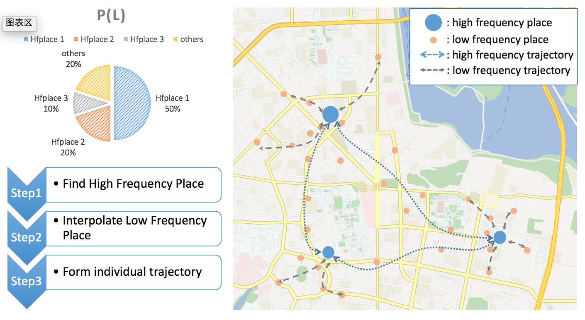
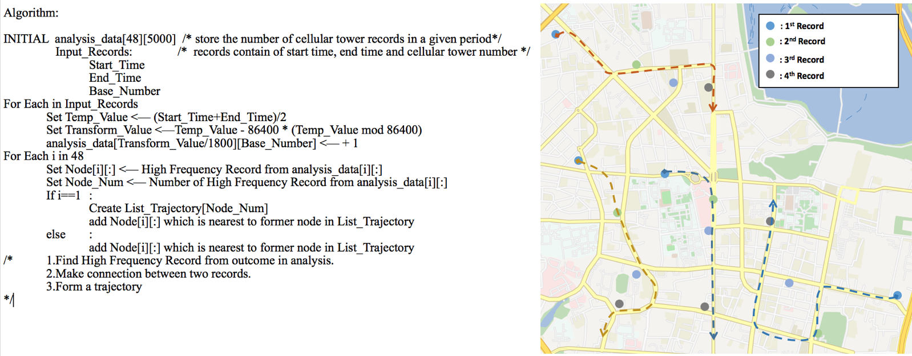
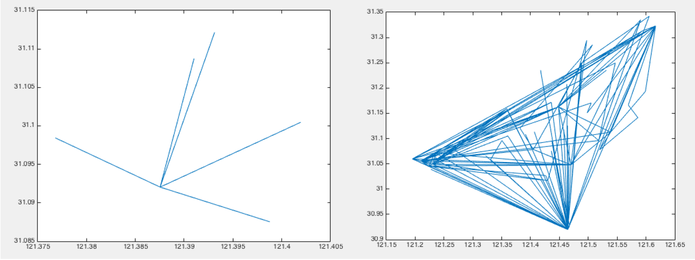
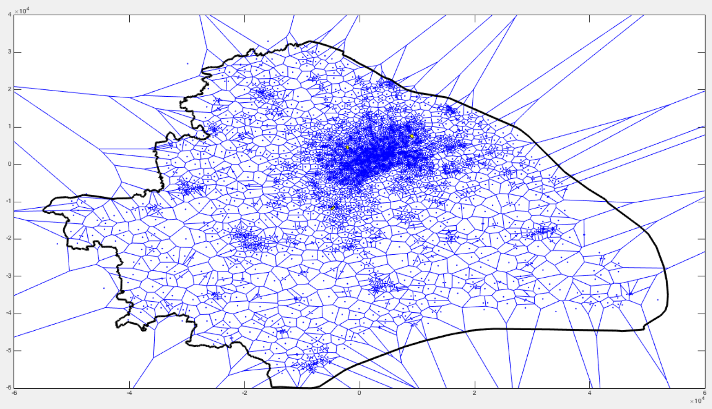
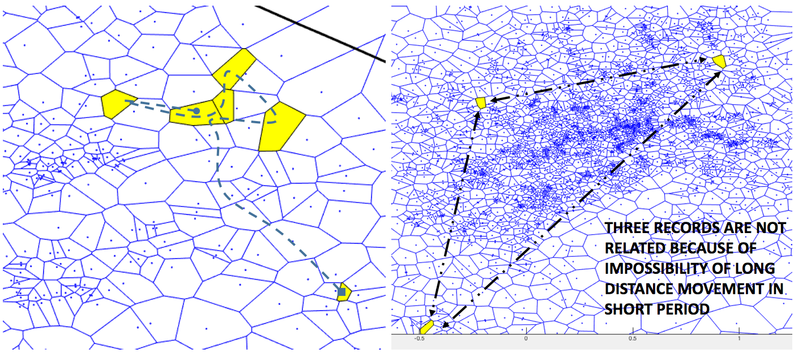

工作日志 By Nicolas Kang
人类移动性
简要介绍
>移动性研究主要为探究移动过程中的规律。主要研究方法是通过移动数据采集，数据处理，归纳。最早的移动研究可追溯到从random walk模型的提出，之后有一些关于鸟类迁徙的移动模型。而后有提出levy flight的移动模型。基于该模型的建立，MIT的MC Gonzalez提出了移动距离指数分布的规律，这是human mobility的开创性研究结论。后续有提出移动间隔指数分布，常驻地点呈1/x分布等等。随着研究方法的不断改进以及实验数据的不断完备，移动规律逐渐被挖掘出来。之后该领域大体方向是从宏观的统计研究转向微观的轨迹研究，从单纯的分析转而与交通，城市规划，公共卫生，反恐安全，医疗等领域结合。

工作介绍
>我的工作是根据已有的数据，首先进行论文的验证，该论文为"Understanding human individual mobility patterns", 该论文的成果是Human Mobility领域的核心基础之一，他提出了移动距离指数分布，Rg回转半径的概念还有个人位置的概率密度函数。

数据介绍
>该数据由众多记录组成，记录包括：手机号码，连接起始时间，结束时间，连接基站号码等。通过基站的号码，我们可以知道基站的gps坐标。出于隐私保护的原因，手机号抹去后两位。若按抹去后的手机号进行归类，可分成大概150，000份数据。记录时间为1个月。
数据分析
>我们的数据基于蜂窝网络，可近似将基站gps等同于人的位置。因此我们在这里可以将人的移动等同于人在移动时间内在不同基站的跳动。尽管移动数据齐全，但是抹去手机号使得几个用户的数据混叠在一起，不能直接进行计算。因此首先理应先进行用户的分离，分离原则如下：1.起始时间和截止时间不能重叠 2.记录与记录之间的移动速度要合理
>根据论文，我画出了相同的图片，可以看出之间的异同。


>数据结论与分析
>我们主要关注结论之间的差异：1.与论文结论相比，移动距离在10km到20km的频率较高 2.回转半径在20km的频率较高，反而在0-15km的频率较低。 3.人的移动轨迹失去了周期性。 4.个人位置的归一化频率密度图并不如论文中的相近。
>我分析的主要原因是：1.数据之间的差异性：论文中所用的数据来自欧洲电话局的6个月的电话数据，而我们的数据来自上海电信的3G数据，电话数据很有可能可以得到精度更高的gps数据，而3g数据只能把gps近似为基站的gps数据。另外研究对象本身也有差异，比如说生活习惯，规律，出行选择等等。2.用户分离的方法：时间不重叠和移动速度合理是单个用户移动轨迹的必要条件，但不是充分条件，还有一些移动的性质和规律可能没有被挖掘。
>需要解决的问题：需要找出更多的移动性质和规律。换言之：我们要更进一步挖掘移动的规律。

>关于移动规律的设想和实施方法
>关于移动的通用规律，我提出了三点设想：1.少量的地点包含了大部分记录 2.路径按一定周期重复，周期为1天。并且经常带有往返。3.人经常选择最短路径，也可以理解为移动路径符合一定的拓扑关系。
>针对第一点和第二点，分别针对两种情况：记录点很多，混合用户多的文件，记录点少，混合用户少的文件。对于第三点，结合速度合理性判断，可用于相邻记录之间的验证。
>1. 针对记录点少，混合用户少的文件。可根据之前论文的结论，可以得出：大部分人有3个高频地点，其记录量占据了总量70%以上。因此如果我们主要分析高频地点，将低频地点按时间顺序及移动合理性插值，既可以大致得出个人轨迹。其中高频地点之间的轨迹是高频轨迹，也是个人大致的移动轨迹。这一点也符合实际，例如人在工作地点，家，娱乐场所之间的往返，而路途中的地点属于低频地点。这个方法优点在于对于少量用户混叠，可较好的分离，而若对于大量用户混叠则效果不佳。原因在于少量用户可明显区分出高频和低频的地点，而且几个用户之间的重合度往往不高。而大量用户之间高频和低频地点重合度很高，例如一个用户的低频地点很有可能是其他用户的高频地点。很难提取高频地点。
>2. 针对记录点多，混合用户多的文件。可根据第二点设想来判断。一份文件包含31天的数据，将31天的数据分开来，根据一个比较算法来寻找有相同的时间和地点的记录。这个方法充分地利用了人的习惯导致的行为周期性。但是这个周期性并不是绝对的，一个人的行为完全有可能没有任何周期。比如说一趟远途旅行，偶然的一次聚会等等。这个方法的优点在于：1.用户总量多，记录量大的时候，将数据分为31天减小了一次分析的数据量，从而减小分析的难度。2. 对于用户总量小，记录量少的时候，将数据分为31天可更有效地找出其中的规律。3. 该方法符合人基本的行为规律，一般来讲，人的工作，娱乐，休息，饮食都伴随着习惯而运行。这个方法的缺点在于：1. 不能解决特殊的用户，这个情况少见，但是这个用户包含在我们的研究之内。 2.不能解决记录量有大量缺失的用户，例如只有一天记录的用户，这个情况属于普遍现象。3. 具有相同习惯的用户很难被区分，不过这个情况很少见。
>实施这个方法，主要的工作是统计，而不是将所有的记录进行比较。统计的工作是将一天时间按30分钟分成一份，总共有24*2份。同时基站的数量有5000出头。接下来遍历所有记录，根据时间，基站号码进行统计。最后分析统计结果，在一定时间范围内，某些基站号码的记录数相对较高，而有些基站号码则有少量，甚至没有记录数。
>我的设想来源一个经历：我认为在150，000份混叠用户中，可能存在一些单个用户的情况，若符合这种情况，起始时间和结束时间必定不能重合。所以第一步我将所有时间不重合的记录提取出来。共10，000余份。
>接下来我便将记录输入至MATLAB，结合数据可视化来查看他们的轨迹。我总结了几种不同的轨迹。以下是其中的两种，可以看出，一种轨迹显得很有秩序，而另一种轨迹杂乱无章，明显形成了几个交集点。其内在的原因是用户有一到两个主要的区域，几个用户之间的混叠则造成了用户之间主要区域的跨越。
>数据的可视化
>对于移动大数据的研究，可视化可谓及其关键：1.很好地从复杂的数据中展现出价值 2.利于大数据的后续应用
>针对我们的蜂窝移动数据，也有一套可视化的工具———— Matlab中的voronioi图
>voronioi图中，点与点之间的中垂线围成了多边形，从而形成了细胞网络。在分析基站的影响区域中，由于基站影响范围不能精确确定，但是基站的范围也不能简单地用圆形辐射所代替。所以根据基站位置模拟出的基站影响范围是完全可行的。
>我们分析的方法很多样：1.将记录输入图内，以动画形式进行判断 2.通过此图来验证分析方法的可行性 3.用此图来分析结果
>以下是几种相关应用，第一个是根据动画来判断可能的路径。第二个是判断基站之间可能的关系。
>方法的验证，相关实验
上面的介绍是我们的阶段工作————提出问题，提出解决方案，初步验证方法。接下来我们的工作是验证方法，验证解决方案。如果效果理想，那么将推广。